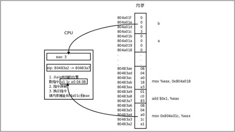
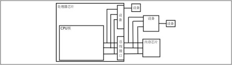
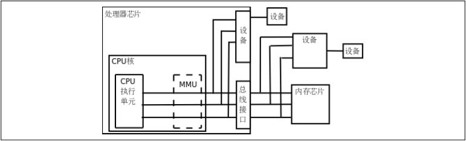
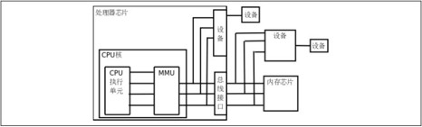
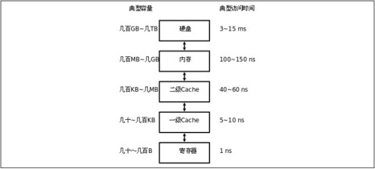
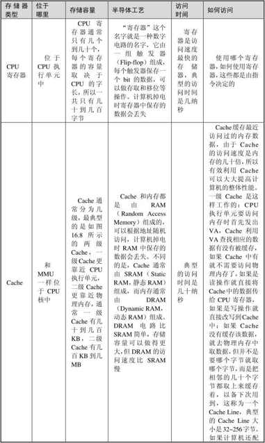
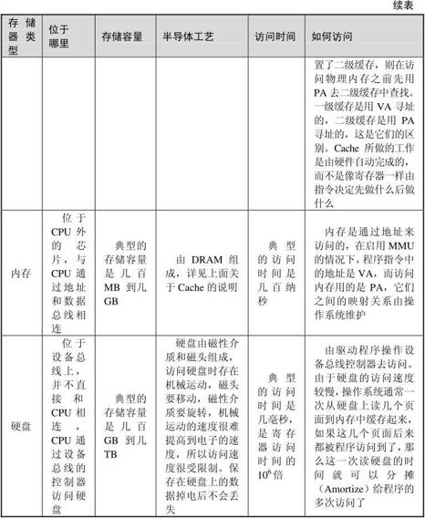

现代计算机都是基于Von Neumann体系结构的，不管是嵌入式系统、PC还是服务器。这种体系结构的主要特点是：CPU（Central Processing Unit，中央处理器，或简称处理器Processor）和内存（Memory）是计算机的两个主要组成部分，内存中保存着数据和指令，CPU从内存中取指令（Fetch）执行，其中有些指令让CPU做运算，有些指令让CPU读写内存中的数据。本章简要介绍组成计算机的CPU、内存和设备以及它们之间的关系，为后续章节的学习打下基础。
我们都见过如图16.1所示挂在墙上的很多个邮箱，每个邮箱有一个房间编号，根据房间编号找到相应的邮箱投入信件或取出信件。内存与此类似，每个内存单元有一个地址（Address），内存地址是从0开始编号的整数，CPU通过地址找到相应的内存单元，取其中的指令或者读写其中的数据。与邮箱不同的是，一个地址所对应的内存单元不能存很多东西，只能存一个字节，以前讲过的int、float等多字节的数据类型保存在内存中要占用连续的多个地址，这种情况下数据的地址是它所占内存单元的起始地址。
图16.1 邮箱的地址
CPU总是周而复始地做同一件事：从内存取指令，然后解释执行它，然后再取下一条指令，再解释执行。CPU最核心的功能单元包括：
⦁ 寄存器（Register）。是CPU内部的高速存储器，像内存一样可以存取数据，但比访问内存快得多。随后的几章我们会详细介绍x86的寄存器eax、esp、eip等，有些寄存器只能用于某种特定的用途，比如eip用作程序计数器，这称为特殊寄存器（Special-purpose Register），而另外一些寄存器可以用在各种运算和读写内存的指令中，比如eax寄存器，这称为通用寄存器（General-purpose Register）。
⦁ 程序计数器（Program Counter，PC）。是一种特殊寄存器，保存着CPU取下一条指令的地址，CPU按程序计数器保存的地址去内存中取指令然后解释执行，这时程序计数器保存的地址会自动加上该指令的长度，指向内存中的下一条指令。
⦁ 指令译码器（Instruction Decoder）。CPU取上来的指令由若干个字节组成，这些字节中有些位表示内存地址，有些位表示寄存器编号，有些位表示这种指令做什么操作，是加减乘除还是读写内存，指令译码器负责解释这条指令的含义，然后调动相应的执行单元去执行它。
⦁ 算术逻辑单元（Arithmetic and Logic Unit，ALU）。如果译码器将一条指令解释为运算指令，就调动算术逻辑单元去做运算，比如加减乘除、位运算、逻辑运算。指令中会指示运算结果保存到哪里，可能保存到寄存器中，也可能保存到内存中。
⦁ 地址和数据总线（Bus）。CPU和内存之间用地址总线、数据总线和控制线连接起来，每条线上有1和0两种状态。如果在执行指令过程中需要访问内存，比如从内存读一个数到寄存器，执行过程可以想象成这样（如图16.2所示）。
图16.2 访问内存读数据的过程
1．CPU内部将寄存器对接到数据总线上，使寄存器的每一位对接到一条数据线，等待接收数据。
2．CPU通过控制线发一个读请求，并且将内存地址通过地址线发给内存。
3．内存收到地址和读请求之后，将相应的内存单元对接到数据总线的另一端，这样，内存单元每一位的1或0状态通过一条数据线到达CPU寄存器中相应的位，就完成了数据传送。
4．往内存里写数据的过程与此类似，只是数据线上的传输方向相反。
图16.2中画了32条地址线和32条数据线，CPU寄存器也是32位，可以说这种体系结构是32位的，比如x86就是这样的体系结构，目前主流的处理器是32位或64位的。地址线、数据线和CPU寄存器的位数通常是一致的，从图16.2可以看出数据线和CPU寄存器的位数应该一致，另外有些寄存器（比如程序计数器）需要保存一个内存地址，因而地址线和CPU寄存器的位数也应该一致。处理器的位数也称为字长，字（Word）这个概念用得比较混乱，在有些上下文中指16位，在有些上下文中指32位（这种情况下16位被称为半字Half Word），在有些上下文中指处理器的字长，如果处理器是32位那么一个字就是32位，如果处理器是64位那么一个字就是64位。32位计算机有32条地址线，地址空间（Address Space）是0x00000000～0xffffffff，共4GB，而64位计算机有更大的地址空间。
最后还要说明一点，本节所说的地址线、数据线是指CPU的内总线，是直接和CPU的执行单元相连的，内总线经过MMU和总线接口的转换之后引出到芯片引脚才是外总线，外地址线和外数据线的位数都有可能和内总线不同，例如32位处理器的外地址总线可寻址的空间可以大于4GB，到第16.4节再详细解释。
我们结合表1.1看一下CPU取指执行的过程，如图16.3所示。

图16.3 CPU的取指执行过程
1．eip寄存器指向地址0x80483a2，CPU从这里开始取一条5个字节的指令，然后eip寄存器指向下一条指令的起始地址0x80483a7。
2．CPU对这5个字节译码，得知这条指令要求从地址0x804a01c开始取4个字节保存到eax寄存器。
3．执行指令，读内存，取上来的数是3，保存到eax寄存器。注意，地址0x804a01c～0x804a01f里存储的四个字节不能按地址从低到高的顺序看成0x03000000，而要按地址从高到低的顺序看成0x00000003。也就是说，对于多字节的整数类型，低地址保存的是整数的低位，这称为小端（Little Endian）字节序（Byte Order）。x86平台是小端字节序的，而另外一些平台规定低地址保存整数的高位，称为大端（Big Endian）字节序。注意上图只画了前三步，剩下的步骤读者可以自己画图理解。
4．CPU从eip寄存器指向的地址取一条3个字节的指令，然后eip寄存器指向下一条指令的起始地址0x80483aa。
5．CPU对这3个字节译码，得知这条指令要求把eax寄存器的值加1，结果仍保存到eax寄存器。
6．执行指令，现在eax寄存器中的数是4。
7．CPU从eip寄存器指向的地址取一条5个字节的指令，然后eip寄存器指向下一条指令的起始地址0x80483af。
8．CPU对这5个字节译码，得知这条指令要求把eax寄存器的值保存到从地址0x804a018开始的4个字节。
10．执行指令，把4这个值保存到从地址0x804a018开始的4个字节（按小端字节序保存）。
CPU执行指令除了访问内存之外还要访问很多设备（Device），如键盘、鼠标、硬盘、显示器等，那么它们和CPU之间如何连接呢？如图16.4所示。

图16.4 设备
有些设备像内存芯片一样连接到处理器的地址总线和数据总线，正因为地址线和数据线上可以挂多个设备和内存芯片所以才叫“总线”，但不同的设备和内存芯片应该占不同的地址范围。访问这种设备就像访问内存一样，按地址读写即可，但和访问内存不同的是，往一个地址写数据只是给设备发一个命令，数据不一定要保存，而从一个地址读数据也不一定是读先前保存在这个地址的数据，而是得到设备的当前状态。设备中可供读写访问的单元通常称为设备寄存器（注意和CPU寄存器不是一回事），操作设备的过程就是读写这些设备寄存器的过程，比如向串口发送寄存器里写数据，串口设备就会把数据发送出去，读串口接收寄存器的值，就可以读取串口设备接收到的数据。
还有一些设备集成在处理器芯片中。在图16.4中，从CPU核引出的地址和数据总线有一端经总线接口引出到芯片引脚上了，还有一端没有引出，而是接到芯片内部集成的设备上，无论是在CPU外部接总线的设备还是在CPU内部接总线的设备都有各自的地址范围，都可以像访问内存一样访问，很多体系结构（比如ARM）采用这种方式操作设备，称为内存映射I/O（Memory-mapped I/O）。但是x86比较特殊，x86对于设备有独立的端口地址空间，CPU核需要引出额外的地址线来连接片内设备（和访问内存所用的地址线不同），访问设备寄存器时用特殊的in/out指令，而不是和访问内存用同样的指令，这种方式称为端口I/O（Port I/O）。
从CPU的角度来看，访问设备只有内存映射I/O和端口I/O两种，要么像内存一样访问，要么用一种专用的指令访问。其实访问设备是相当复杂的，计算机的设备五花八门，各种设备的性能要求都不一样，有的要求带宽大，有的要求响应快，有的要求热插拔，于是出现了各种适应不同要求的设备总线，比如PCI、AGP、USB、1394、SATA等，这些设备总线并不直接和CPU相连，CPU通过内存映射I/O或端口I/O访问相应的总线控制器，通过总线控制器再去访问挂在总线上的设备。所以上图中标有“设备”的框可能是实际的设备，也可能是设备总线的控制器。
在x86平台上，硬盘是挂在IDE、SATA或SCSI总线上的设备，保存在硬盘上的程序是不能被CPU直接取指令执行的，操作系统在执行程序时会把它从硬盘拷贝到内存，这样CPU才能取指令执行，这个过程称为加载（Load）。程序加载到内存之后，成为操作系统调度执行的一个任务，就称为进程（Process）。进程和程序不是一一对应的。一个程序可以多次加载到内存，成为同时运行的多个进程，例如可以同时开多个终端窗口，每个窗口都运行一个Shell进程，而它们对应的程序都是磁盘上的/bin/bash文件。
操作系统（Operating System）本身也是一段保存在磁盘上的程序，计算机在启动时执行一段固定的启动代码（称为Bootloader）首先把操作系统从磁盘加载到内存，然后执行操作系统中的代码把用户需要的其他程序加载到内存。操作系统和其他用户程序的不同之处在于：操作系统是常驻内存的，而其他用户程序则不一定，用户需要运行哪个程序，操作系统就把它加载到内存，用户不需要哪个程序，操作系统就把它终止掉，释放它所占的内存。操作系统最核心的功能是管理进程调度、管理内存的分配使用和管理各种设备，做这些工作的程序称为内核（Kernel），在我的系统上内核程序是/boot/vmlinuz-2.6.28-13-generic文件，它在计算机启动时加载到内存并常驻内存。广义上操作系统的概念还包括一些必不可少的用户程序，比如Shell是每个Linux系统必不可少的，而Office办公套件则是可有可无的，所以前者也属于广义上操作系统的范畴，而后者属于应用软件。
访问设备还有一点和访问内存不同。内存只是保存数据而不会产生新的数据，如果CPU不去读它，它也不需要主动提供数据给CPU，所以内存总是被动地等待被读或者被写。而设备往往会自己产生数据，并且需要主动通知CPU来读这些数据，例如敲键盘产生一个输入字符，用户希望计算机马上响应自己的输入，这就要求键盘设备主动通知CPU来读这个字符并做相应处理，给用户响应。这是由中断（Interrupt）机制实现的，每个设备都有一条中断线，通过中断控制器连接到CPU，当设备需要主动通知CPU时就引发一个中断信号，CPU正在执行的指令将被打断，程序计数器会指向某个固定的地址（这个地址由体系结构定义），于是CPU从这个地址开始取指令（或者说跳转到这个地址），执行中断服务程序（Interrupt Service Routine，ISR），完成中断处理之后再返回先前被打断的地方执行后续指令。比如某种体系结构规定发生中断时跳转到地址0x00000010执行，那么就要事先把一段ISR程序加载到这个地址，ISR程序是内核代码的一部分，在这段代码中首先判断是哪个设备引发了中断，然后调用该设备的中断处理函数做进一步处理。
由于各种设备的操作方法各不相同，每种设备都需要专门的设备驱动程序（Device Driver），一个操作系统为了支持广泛的设备就需要有大量的设备驱动程序，事实上Linux内核源代码中绝大部分是设备驱动程序。设备驱动程序通常是内核里的一组函数，通过读写设备寄存器实现对设备的初始化、读、写等操作，有些设备还要提供一个中断处理函数供ISR调用。
现代操作系统普遍采用虚拟内存管理（Virtual Memory Management）机制，这需要处理器中的MMU（Memory Management Unit，内存管理单元）提供支持，本节简要介绍MMU的作用。
首先引入两个概念，虚拟地址和物理地址。如果处理器没有MMU，或者有MMU但没有启用，CPU执行单元发出的内存地址将直接传到芯片引脚上，被内存芯片（以下称为物理内存，以便与虚拟内存区分）接收，这称为物理地址（Physical Address，以下简称PA），如图16.5所示。

图16.5 物理地址
如果处理器启用了MMU，CPU执行单元发出的内存地址将被MMU截获，从CPU到MMU的地址称为虚拟地址（Virtual Address，以下简称VA），而MMU将这个地址翻译成另一个地址发到CPU芯片的外部地址引脚上，也就是将VA映射成PA，如图16.6所示。

图16.6 虚拟地址
如果是32位处理器，则内地址总线是32位的，与CPU执行单元相连（图中只是示意性地画了4条地址线），而经过MMU转换之后的外地址总线则不一定是32位的。也就是说，虚拟地址空间和物理地址空间是独立的，32位处理器的虚拟地址空间是4GB，而物理地址空间既可以大于也可以小于4GB。
MMU将VA映射到PA是以页（Page）为单位的，32位处理器的页尺寸通常是4KB。例如，MMU可以通过一个映射项将VA的一页0xb7001000～0xb7001fff映射到PA的一页0x2000～0x2fff，如果CPU执行单元要访问虚拟地址0xb7001008，则实际访问到的物理地址是0x2008。物理内存中的页称为物理页面或者页帧（Page Frame）。虚拟内存的哪个页面映射到物理内存的哪个页帧是通过页表（Page Table）来描述的，页表保存在物理内存中，MMU会查找页表来确定一个VA应该映射到什么PA。
操作系统和MMU是这样配合的：
1．操作系统在初始化或分配、释放内存时会执行一些指令在物理内存中填写页表，然后用指令设置MMU，告诉MMU页表在物理内存中的什么位置。
2．设置好之后，CPU每次执行访问内存的指令都会自动引发MMU做查表和地址转换操作，地址转换操作由硬件自动完成，不需要用指令控制MMU去做。
我们在程序中使用的变量和函数都有各自的地址，程序被编译后，这些地址就成了指令中的地址，指令中的地址被CPU解释执行，就成了CPU执行单元发出的内存地址，所以在启用MMU的情况下，程序中使用的地址都是虚拟地址，都会引发MMU做查表和地址转换操作。那为什么要设计这么复杂的内存管理机制呢？多了一层VA到PA的转换到底换来了什么好处？All problems in computer science can be solved by another level of indirection.还记得这句话吗？多了一层间接必然是为了解决什么问题的，等讲完了必要的预备知识之后，将在第19.5节讨论虚拟内存管理机制的作用。
MMU除了做地址转换之外，还提供内存保护机制。各种体系结构都有用户模式（User Mode）和特权模式（Privileged Mode）之分，如图16.7所示，操作系统可以在页表中设置每个内存页面的访问权限，有些页面不允许访问，有些页面只有在CPU处于特权模式时才允许访问，有些页面在用户模式和特权模式都可以访问，访问权限又分为可读、可写和可执行三种。这样设定好之后，当CPU要访问一个VA时，MMU会检查CPU当前处于用户模式还是特权模式，访问内存的目的是读数据、写数据还是取指令，如果和操作系统设定的页面权限相符，就允许访问，把它转换成PA，否则不允许访问，产生一个异常（Exception）。异常的处理过程和中断类似，不同的是中断由外部设备产生而异常由CPU内部产生，中断产生的原因和CPU当前执行的指令无关，而异常的产生就是由于CPU当前执行的指令出了问题，例如访问内存的指令被MMU检查出权限错误，除法指令的除数为0等都会产生异常。
图16.7 处理器模式
通常操作系统把虚拟地址空间划分为用户空间和内核空间，例如x86平台的Linux系统虚拟地址空间是0x00000000～0xffffffff，前3GB（0x00000000～0xbfffffff）是用户空间，后1GB（0xc0000000～0xffffffff）是内核空间。用户程序加载到用户空间，在用户模式下执行，不能访问内核中的数据，也不能跳转到内核代码中执行。这样可以保护内核，如果一个进程访问了非法地址，顶多这一个进程崩溃，而不会影响到内核和整个系统的稳定性。CPU在产生中断或异常时不仅会跳转到中断或异常服务程序，还会自动切换模式，从用户模式切换到特权模式，因此从中断或异常服务程序可以跳转到内核代码中执行。事实上，整个内核就是由各种中断和异常处理程序组成的。总结一下：在正常情况下处理器在用户模式执行用户程序，在中断或异常情况下处理器切换到特权模式执行内核程序，处理完中断或异常之后再返回用户模式继续执行用户程序。
段错误我们已经遇到过很多次了，它是这样产生的：
1．用户程序要访问的一个VA，经MMU检查无权访问。
2．MMU产生一个异常，CPU从用户模式切换到特权模式，跳转到内核代码中执行异常服务程序。
3．内核把这个异常解释为段错误，把引发异常的进程终止掉。
硬盘、内存、CPU寄存器，还有本节要讲的Cache，这些都是存储器，计算机为什么要有这么多种存储器呢？这些存储器各自有什么特点？这是本节要讨论的问题。
由于硬件技术的限制，我们可以制造出容量很小但访问速度很快的存储器，也可以制造出容量很大但访问速度很慢的存储器，但不可能两边的好处都占着，不可能制造出访问速度又快容量又大的存储器。因此，现代计算机都把存储器分成若干级，称为Memory Hierarchy，按照离CPU由近到远的顺序依次是CPU寄存器、Cache、内存、硬盘，越靠近CPU的存储器容量越小但访问速度越快，图16.8给出了各种存储器的容量和访问速度的典型值，具体说明如表16.1所示。

图16.8 Memory Hierarchy
表16.1 Memory Hierarchy


对表16.1总结如下。
⦁ 寄存器、Cache和内存中的数据都是掉电丢失的，这称为易失性存储器（Volatile Memory），与之相对的，硬盘是一种非易失性存储器（Non-volatile Memory）。
⦁ 除了访问寄存器由程序指令直接控制之外，访问其他存储器都不是由指令直接控制的，有些是硬件自动完成的，有些是操作系统配合硬件完成的。
⦁ Cache从内存取数据时会预取一个Cache Line缓存起来，操作系统从硬盘读数据时会预读几个页面缓存起来，都是希望这些数据以后会被程序访问到。大多数程序的行为都具有局部性（Locality）的特点：它们会花费大量的时间反复执行一小段代码（例如循环），或者反复访问一个很小的地址范围中的数据（例如访问一个数组）。所以预读+缓存的办法是很有效的：CPU取一条指令，我把和它相邻的指令也都缓存起来，CPU很可能马上就会取到；CPU访问一个数据，我把和它相邻的数据也都缓存起来，CPU很可能马上就会访问到。设想有两台计算机，一台有256KB的Cache，另一台没有Cache，两台计算机的内存都是512MB的，硬盘都是100GB的，虽然多出来256KB的Cache与内存、硬盘的容量相比微不足道，但访问Cache比访问内存、硬盘快几个数量级，由于局部性原理，CPU大部分时间在和Cache打交道，有Cache的计算机明显会快很多。高速存储器的容量只能做得很小，却能显著提升计算机的性能，这就是Memory Hierarchy的意义所在。